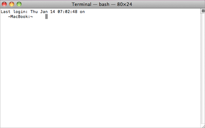
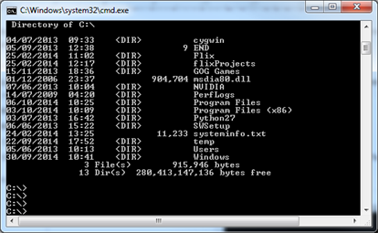

Many tasks in this chapter tell you to enter commands from a terminal or shell. This refers to a window where you can enter commands directly rather than making selections through a user interface.
The following describes how to open such a window for your operating system.
• Linux: Click the right mouse button over the desktop and select New Terminal (or Open Terminal) from the right-click menu.
• Windows: From the Start menu, select All Programs > Accessories > Command Prompt.
• Mac OS X: Click on the Terminal dock icon.
OR
Browse to the Applications > Utilities folder on your system hard drive, and double-click the Terminal icon.
Inside the terminal or shell, you’ll see a command prompt, which looks similar to this:
|
 |
 |
| Terminal prompt on Linux and Mac OS X | Command prompt for Windows |
Once you see the command prompt, you can enter commands to perform various tasks like listing the files in a directory or running programs. Here are some specific examples:
• On Linux or Mac OS X, type pwd and press Enter to view the path of the current directory. On Windows, the equivalent command would be cd.
• On Linux or Mac OS X, type ls and press Enter to view a list of files in the current directory. On Windows, the equivalent command would be dir.
• On Linux, Mac OS X and Windows, type cd followed by a full path name and press Enter to change directories.
|
|